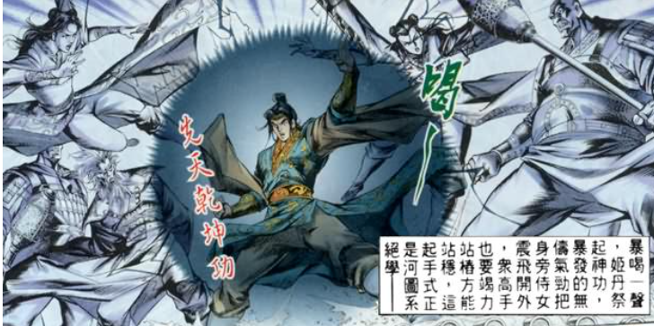

蘇洵 著
蘇洵（1009–1066）
字明允，眉州眉山人
「唐宋八大家」之一
七雄並立：秦、韓、趙、魏、楚、燕、齊
最終由秦統一天下
宋室積弱，每年向契丹、西夏繳納大量銀絹，
以求和平——歷史驚人地相似！
借六國賂秦之事，諷諭宋朝統治者
不應以財物換取和平，應積極抗敵
戰國七雄形勢圖（約公元前260年）
「六國破滅，
非兵不利，戰不善，
弊在賂秦。」
不是因為
兵器不利
不是因為
作戰失誤
真正原因：
割地賄賂秦國
賂秦者：韓、魏、楚
直接因賂秦而亡
不賂者：燕、趙、齊
因失去強援而亡
割地求安，最先被滅（前230年）
屢割城邑，國力大損（前225年）
割地求和，終難倖免（前223年）
與秦結盟，不助五國，孤立無援（前221年）
派荊軻刺秦王，反而加速滅亡（前222年）
誅殺良將李牧，自毀長城（前228年）
🔗 共同根源：賂秦使秦國壯大，令不賂者亦勢孤力弱
🔺 秦國因賂秦所得土地
= 戰勝所得的 100倍
🔻 六國因賂秦所失土地
= 戰敗所失的 100倍
「較秦之所得與戰勝而得者，其實百倍；
諸侯之所亡與戰敗而亡者，其實亦百倍。」
六國割地給秦
（薪 = 土地）
秦國越來越強
（火越燒越旺）
六國加速滅亡
（薪盡人亡）
💡 現代版：就像你每次被人欺負都給錢，對方只會越來越大膽！
首個被滅，割地最多
李牧被誅，邯鄲陷落
大梁被水攻，城破
王翦率60萬大軍滅楚
荊軻刺秦失敗，加速滅亡
附秦不助五國，最後孤立
秦始皇建立中國第一個大一統帝國
燕太子丹不滿秦國威脅，決定派刺客
荊軻假裝獻地圖，藏匕首入秦宮
「圖窮匕見」——刺殺失敗，荊軻被殺
秦王大怒，加速出兵滅燕！
📌 蘇洵評語：「至丹以荊卿為計，始速禍焉」
——此舉非但無益，反而加速了滅亡

荊軻刺秦王（歷史畫）
李牧——戰國四大名將之一
秦國用反間計，令趙王誤信讒言，
誅殺了最強大將李牧
失去李牧後，趙國無力抵抗，
首都邯鄲迅速淪陷，趙國滅亡
「惜其用武而不終也」——蘇洵
六國合力西向，
秦人「食之不得下嚥」！
（秦國寢食難安，未必能統一！）
📚 蘇洵的結論：六國本有勝秦之道，卻被秦國的積威所嚇倒，
一步步走向滅亡——完全是自己造成的！
→ 封天下之謀臣
把割讓的土地，用來獎賞有謀略的臣子
→ 禮天下之奇才
把侍奉秦國的心思，用來招攬天下人才
→ 六國合力抗秦
六國團結一致，共同對抗秦國
❌ 實際做法
割地賂秦，各自為政
✅ 應有做法
合縱抗秦，共禦外敵
| 🏛️ 戰國六國 | 對應 | 🏯 北宋 |
|---|---|---|
| 割地賂秦 | ≈ | 歲幣賂契丹、西夏 |
| 秦國（強敵） | ≈ | 契丹 / 西夏 |
| 六國（弱方） | ≈ | 北宋 |
| 賂秦而力虧 | ≈ | 歲幣耗盡國力 |
| 六國最終滅亡 | ⚠️ | 宋朝將步後塵？ |
⚠️ 蘇洵警告：「苟以天下之大，而從六國破亡之故事，
是又在六國下矣！」
先否定「兵不利、戰不善」，再立「弊在賂秦」
祖先創業之艱辛 vs 子孫輕易割地
用「抱薪救火」形象說明賂秦之弊
自問自答，引導讀者思考
對仗工整，增強氣勢
假設六國合力抗秦，反證賂秦之弊
賂秦必亡之由
不賂者亦亡之由
合力抗秦之法
宋朝若重蹈六國覆轍，更在六國之下！
🎉 測驗完成！
你答對了 / 4 題
論點：六國破滅，弊在賂秦
賂秦者：韓魏楚直接因割地而亡
不賂者：齊燕趙因失強援而亡
比喻：抱薪救火——越賂越危
解決方案：封謀臣、禮奇才、並力西向
借古諷今：警惕宋朝勿重蹈六國覆轍
—— 蘇洵